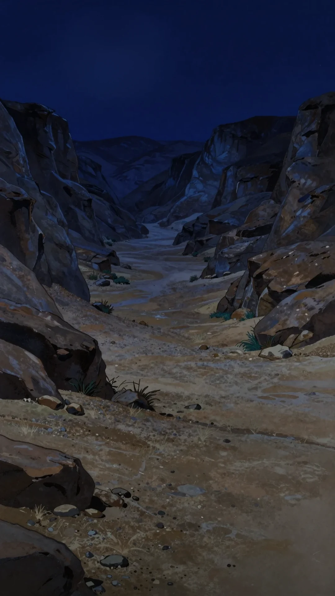
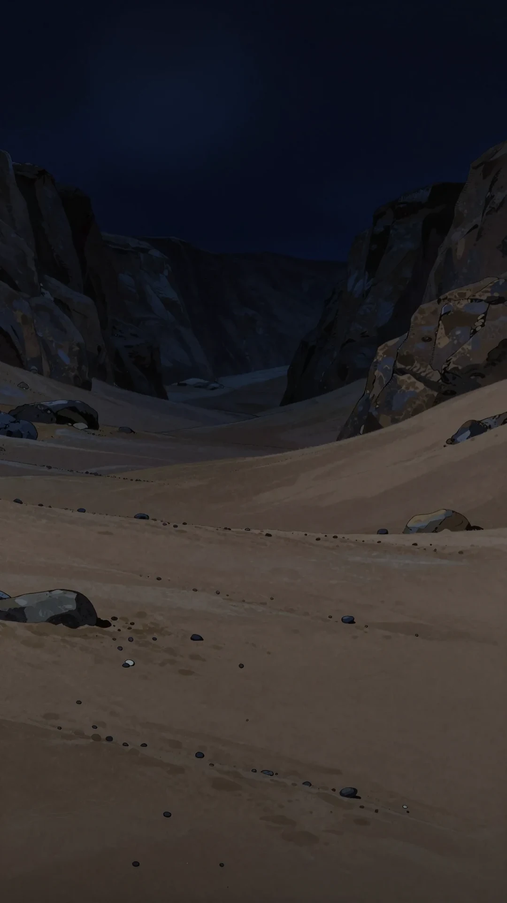
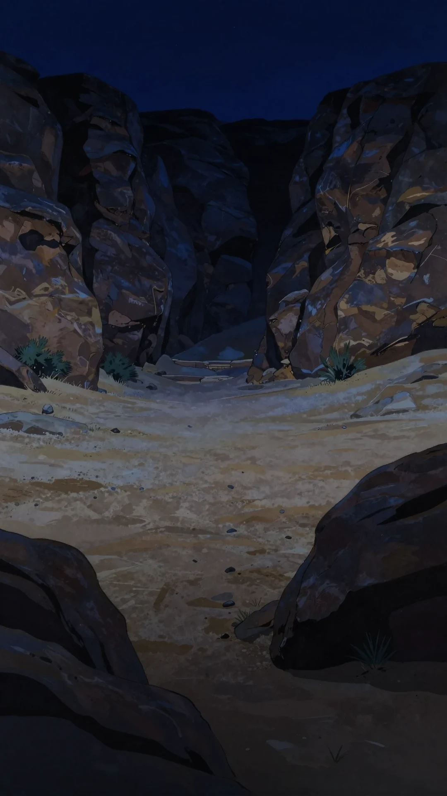
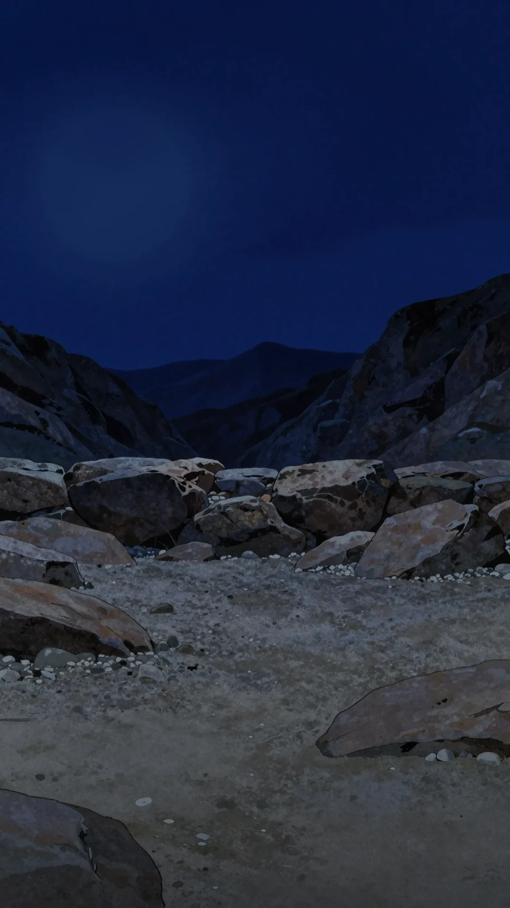
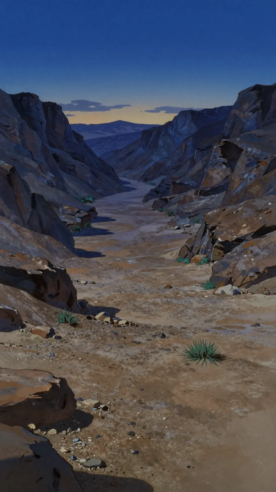

ورقة الأسلوب — موقف المقداد رضي الله عنه
المبدأ: شخصيات بسيطة جدًا (رجال عصويون بعمائم ولحى، رؤوس بلا ملامح)، وعالم مرسوم بغنى: خلفيات مرسومة يدويًا بأسلوب الغواش في أفلام الأنمي السينمائية اليابانية.
الشخصيات والخيول والأدوات «سِلّ» مرسوم بخط حبر وحبيبات غواش، تُركَّب فوق الخلفيات طبقاتٍ منفصلة بشفافية حقيقية.
الخلفيات (بلا أشخاص ولا حيوانات ولا أدوات ولا نصوص) — جغرافيا واحدة متصلة

BG01 وادي ذَفِران — ليلًا

BG02 أرض المعسكر

BG03 موضع المشورة

BG04 موقف المقداد

BG05 الوادي قبيل الفجر
لوحة الألوان والإضاءة
Night grade: sprite multiply rgb(0.50,0.57,0.78) + warm firelight falloff; dawn grade rgb(0.80,0.78,0.86) + horizon warmth. One moon sprite reused for every night plate (baked moons painted out).
الأدوات التاريخية (الحجاز، القرن السابع)

tent_a

tent_b

campfire

waterskin

bedroll

bundle

rope

bowl

sword

shield

saddlebags
المؤثرات

flame_00

flame_04

flame_08

moon

smoke

dust_02

dust_05
قواعد ثابتة
- النبي ﷺ لا يظهر أبدًا: لا شخص ولا ظل ولا يد ولا نور على هيئة إنسان؛ يُفهم موضعه من اتجاه الصحابة إلى نقطة خارج الإطار.
- الوجوه: رأس واضح بلا عيون ولا حواجب ولا أنف ولا فم — اللحية وحدها. التمثيل بالجسد واليد والرأس فقط، بلا تحريك فم.
- لا موسيقى إطلاقًا: صوت الشيخ الأصلي + مؤثرات طبيعية خفيفة، ولا مؤثرات أثناء الآية الكريمة.
- لا معركة ولا أحداث مخترعة؛ اللقطات تتبع نص السرد وتوقيته.
الخط
موقف المقداد
Amiri Bold — title
أشيروا عليَّ أيها الناس
Noto Naskh Arabic 600 — subtitles